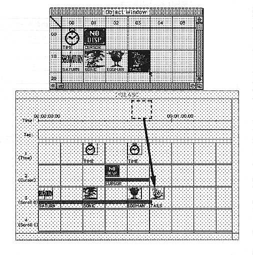

Return to previous page ｜ Return to menu ｜ Go to next page
- Placement of objects
To place the registered object data in the scenario window
[1] Activate the object window and select the object to place.
[2] When the selected object is dragged, an object frame appears on the scenario window. Drag it and drop it onto the appropriate time axis in the object placement area of the scenario window (Figure 2.17).
[3] Double-click the placed object to open the playback information dialog (Figure 2.18).
[4] Enter the playback start time, playback time, and other necessary items.

Figure 2.17 Object placement
Return to previous page ｜ Return to menu ｜ Go to next page